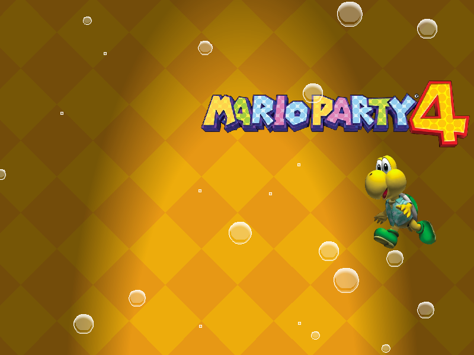
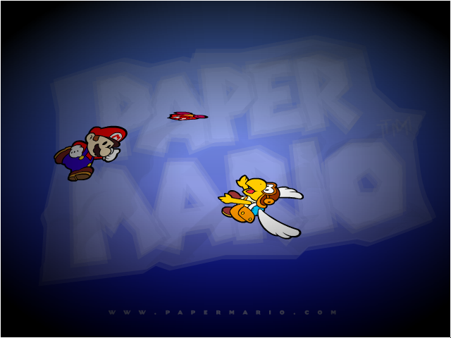

Mario Screensavers

Mario Kart: Double Dash!!

DOWNLOAD
 .exe file zipped (Windows) (995 KB)
.exe file zipped (Windows) (995 KB)
.sit file (Mac OS 9) (1.8 MB)
.sit file (Mac OS X) (1.68 MB)
Mario Kart DS

DOWNLOAD
.exe file zipped (Windows) (5.52 MB)
.sit file (Mac OS X) (5.44 MB)
Mario Party 2
Archived from an old version of Nintendo of Norway's website (nintendo.no).
Originally from nintendo.de

DOWNLOAD
.exe file zipped (1.71 MB)
Mario Party 4

DOWNLOAD
.exe file zipped (Windows) (726 KB)
.sit file (Mac OS 9) (1.12 MB)
.sit file (Mac OS X) (1.32 MB)
Mario vs. Donkey Kong

DOWNLOAD
.exe file zipped (Windows) (1.02 MB)
.sit file (Mac OS 9/X) (2.09 MB)
Paper Mario

DOWNLOAD
.exe file zipped (Windows) (1.36 MB)